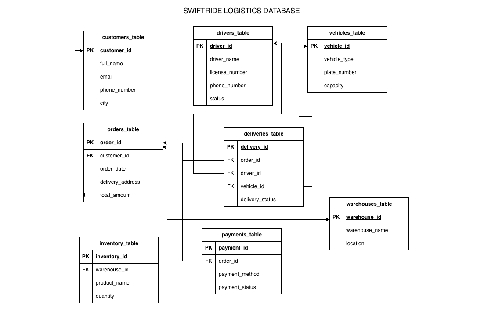

Designed and deployed a relational data platform for a logistics company, replacing fragmented operational records with a governed PostgreSQL system hosted on Supabase. The solution organizes customers, orders, deliveries, drivers, vehicles, warehouses, inventory, and payments across four business schemas while preserving end-to-end referential integrity.
Built a one-command Bash loader that initializes the schema, applies validation constraints, imports CSV files in foreign-key-safe order, repairs PostgreSQL sequences, and verifies row counts after ingestion. Added DDL, DML, DQL, and DCL layers, environment-based credential handling, cascading rules, and role-based access patterns for production-minded database operations.
Converted SQL analysis into stakeholder-ready outputs, including a GitHub-friendly Markdown report and a styled eight-page color PDF. The reports translate customer value, driver workload, delivery performance, payment health, revenue, and inventory risk into clear operational recommendations.